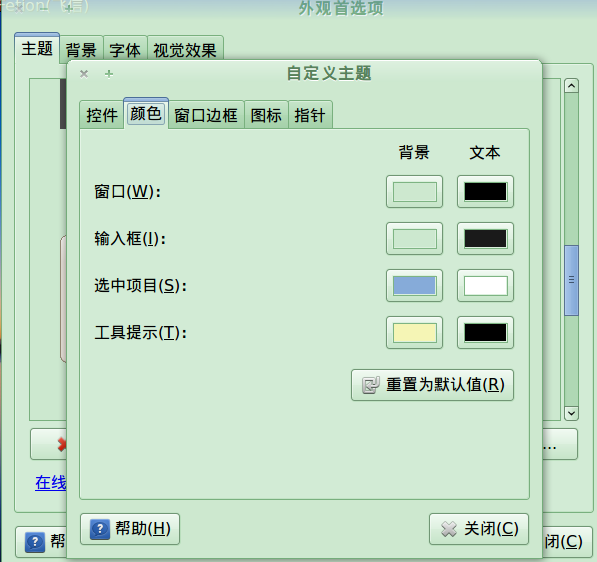
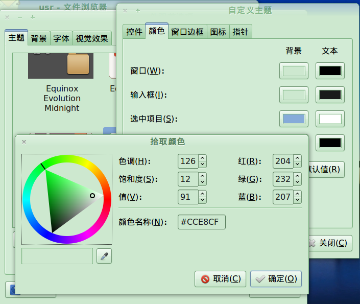
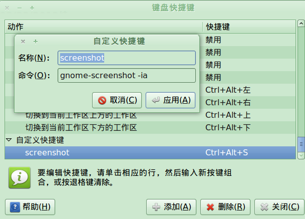

gnome护眼设置--窗口背景设置为绿豆沙
我就说win能做到ubuntu也能~
主题-->自定义-->颜色

修改窗口和输入框两项的颜色: 126-12-91

现在就很舒服了
然后貌似nautils要再设置一下: 编辑-->背景和徽标-->颜色-->把那个绿豆沙颜色加进去
再加上[chrome的设置], 嗯 就完美了!
--imported from zim
more ...chrome护眼设置--把背景设置为绿豆沙
直接把这里的贴上吧... (以下为copy)
首先，下载安装chrome的stylist插件 然后，打开"扩展设置"，点击chrome stylist的选项，点击demo进行修改。
把网页背景修改为豆沙绿的参数设置: 输入框1：demo 选项框2：regexp 输入框3：(ftp|http|https)://D 输入框4： * { background: #C7EDCC !important; } 修改后保存即可 (url和style text可根据自己喜好配置) 附：豆沙绿的参数 RGB颜色 199；237；204 十六位颜色代码 #C7EDCC 色调：85；饱和度：123；亮度：205
不会的话直接用这个扩展。

04/24/2012续
关于那个正则表达式 ...
more ...把抓图工具关联到ubuntu快捷键
终端输入gnome-screenshot --help, 发现选项"-a"表示的是抓取一部分屏幕.
于是打开编辑键盘快捷键窗口, 新建一个快捷键如下图:

这样, 按下Ctrl+Alt+s快捷键后即可启动抓图, 且是抓取一个区域. 不过不知为什么, 反应比较慢, 需要按下一段时间 (一秒钟?)才会有反应.
02/23/2012续: 安装了lucid之后不好使了! 症状就是, 参数-a不起作用, 按下快捷键后直接出来桌面截图, 如果一直按着的话会出来选取区域的, 但是此时已经把桌面截了N次了!.... 无语啊!
上网搜了好久,终于在奶牛的博客里看见了方法: 命令参数变成 -ai, 这样每次按下快捷键后会先弹出来交互界面... 也罢...
我非常无语...

嗯 就这样吧~...
--imported from zim
more ...